◢ Maurits posters.
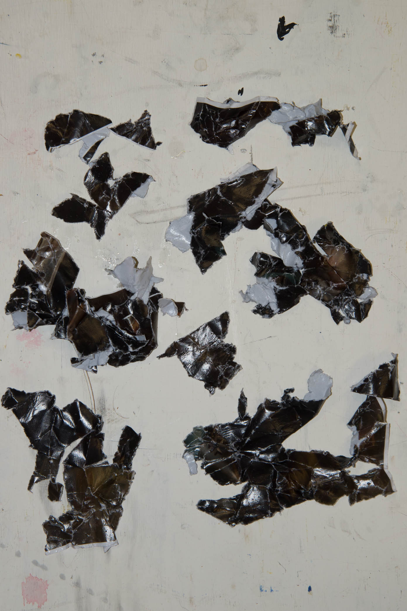
Johan Maurits 1
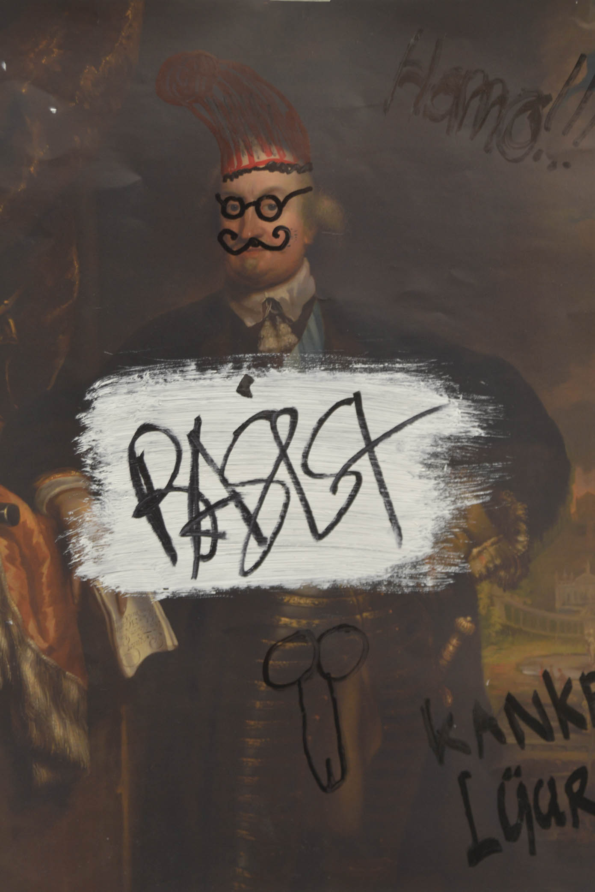Johan Maurits 2
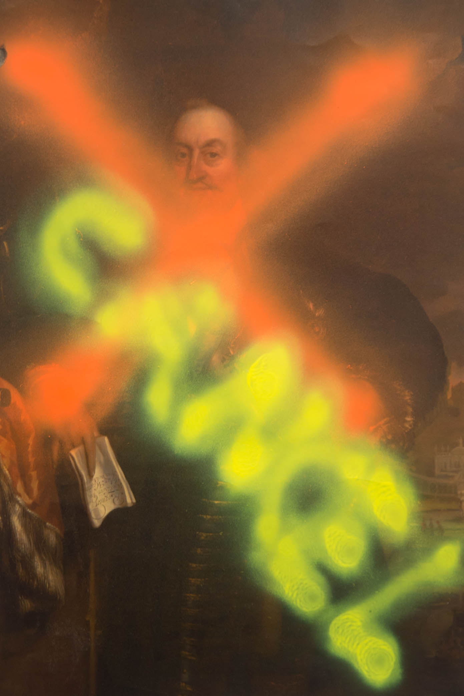Johan Maurits 3

Johan Maurits 4
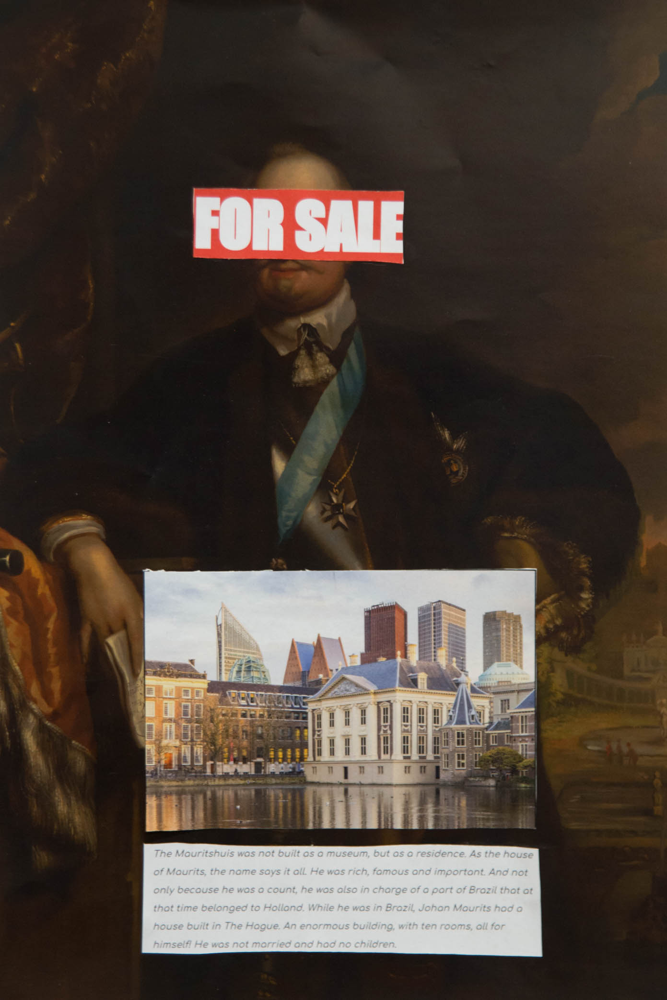Johan Maurits 5
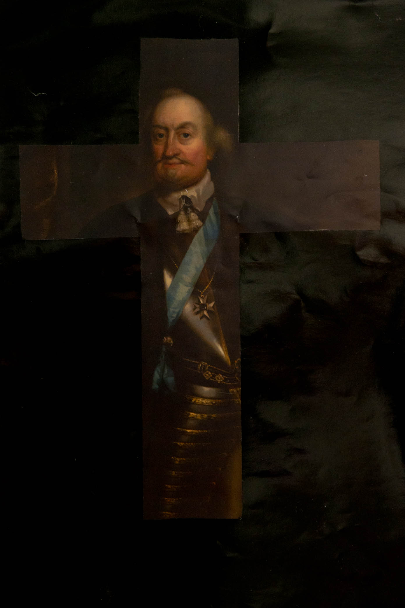Johan Maurits 6
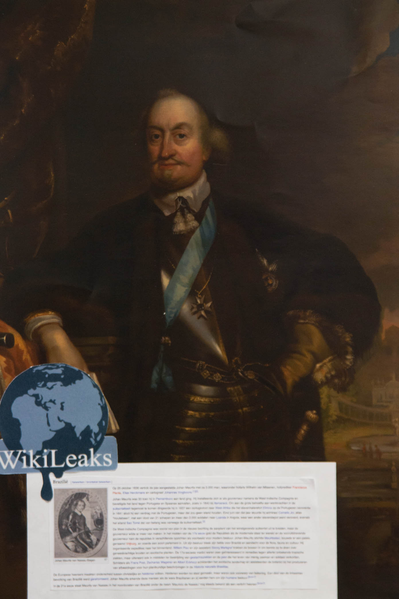Johan Maurits 7
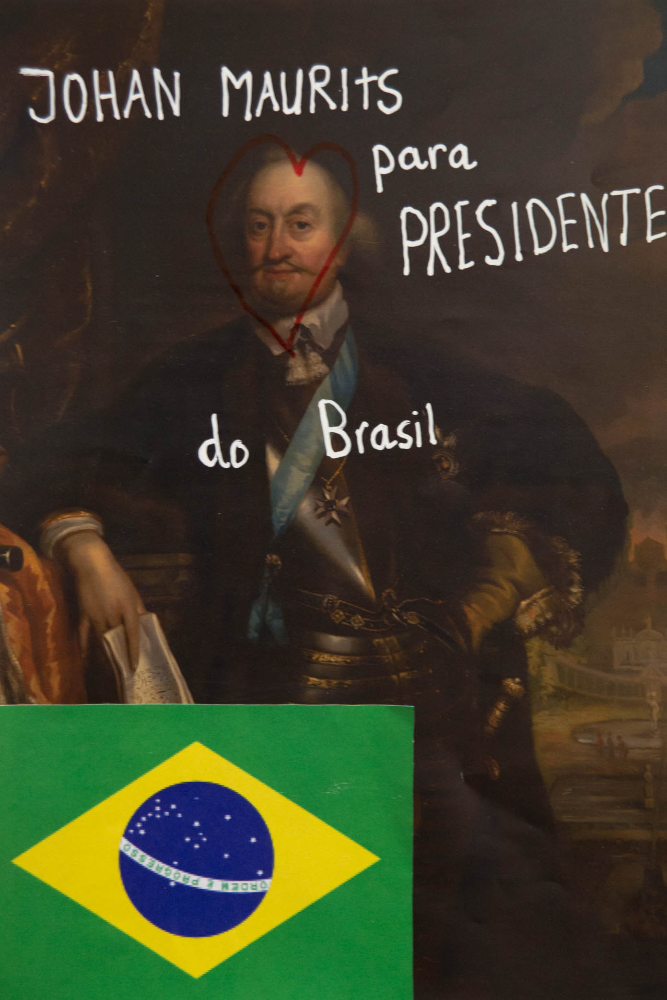Johan Maurits 8
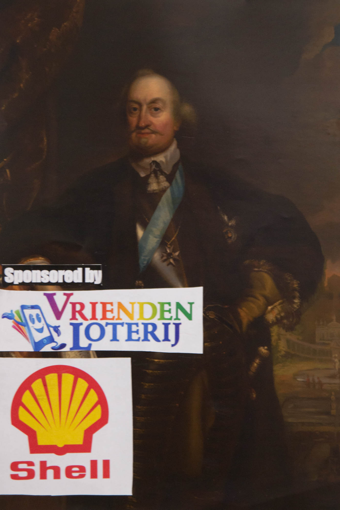Johan Maurits 9
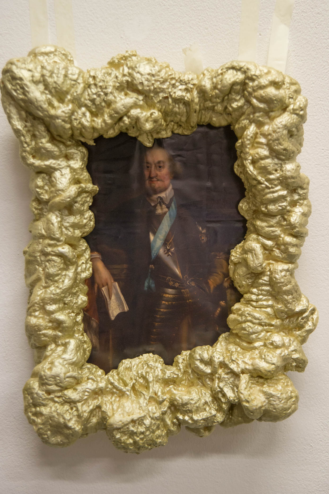Johan Maurits 10
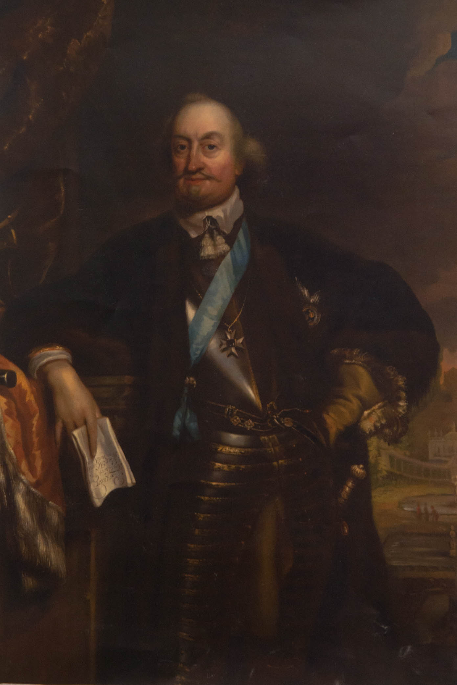Johan Maurits 11
Walk in impression Mauritshuis.
Walk in impression Beelden aan Zee. (WIP)
Walk in Landart Flevoland. (WIP)
◢ Beelden aan Zee studio.
Studio aan zee is the public studio of museum Beelden Aan Zee. Led by Johan Tahon, a sculptor who built his studio there for a year, children and grownups can experience and participate in all aspects of sculpture. The room is divided into three pieces. There is the lounge, the workplace and the artist studio (which is divided by a small stage.) In the corner is a video playing (Takes 12:46) where we can see Johan Tahon and the conservator of education, Marlies Nijkamp, talk. The artist talks about how a studio is a space where there is distance to reality and is highly personal. The coffee corner of Studio aan Zee really adds to this thought, where the parents can see their children creating in the studio with the given materials, magic sand, non dryable clay and markers with coloring pages. The studio on its own (I haven’t seen the workshops that are given there) doesn’t compare to the big promises they made in the video. The alleged experimental character of the studio is only shown in a way that it seems like they have no clue of how to let the audience participate on their own.
Tom, Kuba and I also tried to work there. After we played with the toys displayed, a woman came to clean up the white Ikea tables with a wet cloth. If you want to let the audience participate in the making of a sculpture, then please try to make it inviting and let is know that it’s okay to make a mess.
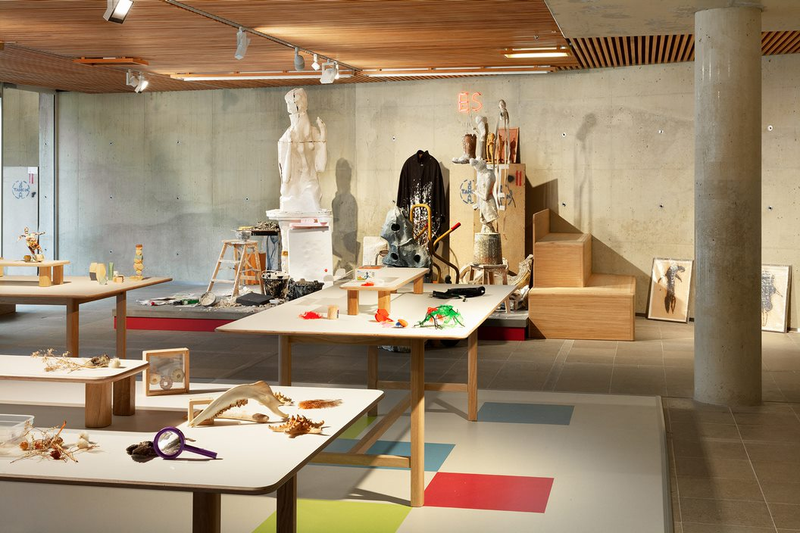

Studio
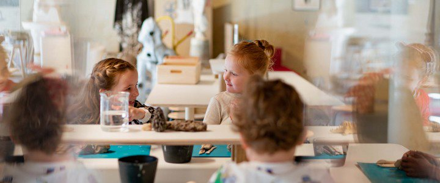Workshop
Sincerity
◢ Landart Riff.
The first thing that called my attention about Riff by Bob Gramsma, was how different the piece could be perceive from afar in comparison to when one was on top of it. When you start getting closer to the artwork, you realize how big it actually is and how small one starts feels; especially when you keep walking to the sides of it and see that the artwork is larger from the sides. In terms of the work itself, it reminded me of a ship or maybe a sea animal primarily because of the size, but also because of the contrast between the concrete material and the landscape surrounding the work. When I later on was told that the top of the piece is aligned with the sea level, I enjoyed hanging on to that thought that it was a stranded ship or sea animal. There is something about the piece that felt put of place, almost as of the work shouldn't belong in that scene: It's odd how in the middle of Flevoland, next to a highway, there is a gigantic 'floating rock'. But that's also what's great about it, it feels so out of place that to the audience (or at least me) it feels striking and it raises my curiosity to know more about it.
Once on top of Riff, the whole perspective changes, because now you don't look up to it, but you look to your feet and what you're walking on; how it feels to walk on concrete. The idea of walking on top seemed exciting, and it was at first because of the barrel-less edge and the abyss-like look to it. But in reality, after being there for a while, you don't feel out of place in comparison to your view or you don't feel ginormous as the rock that you're on top of, you feel like your part of the scene.
At the end the piece ends up feeling right on that space, because although one might be 7 meters above the ground, at the distance it matches with the rest of the flatness of Nederland.
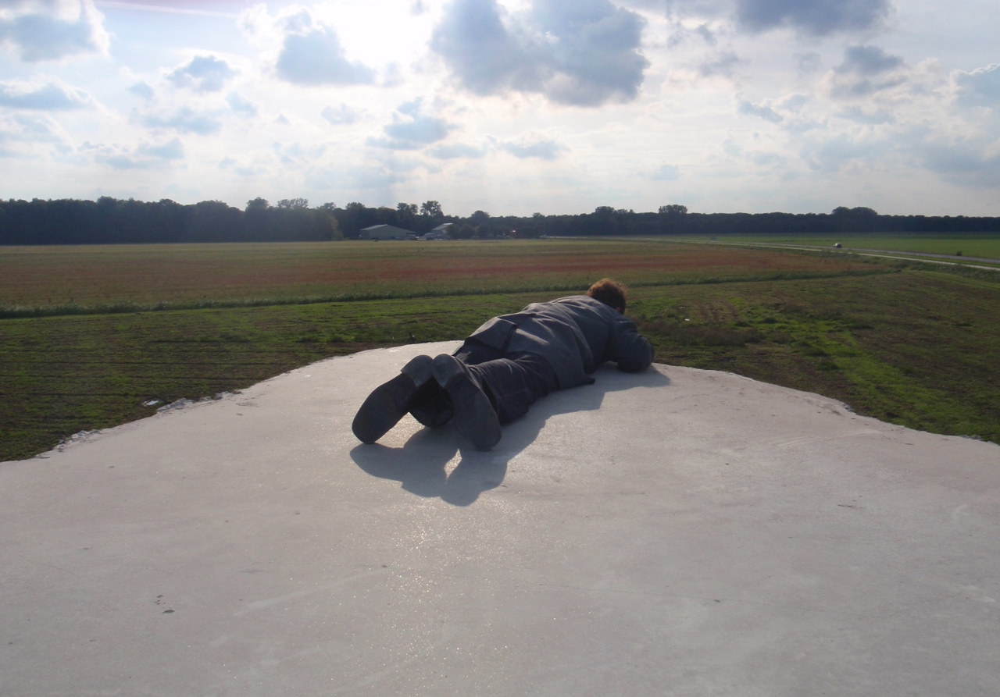
Studio
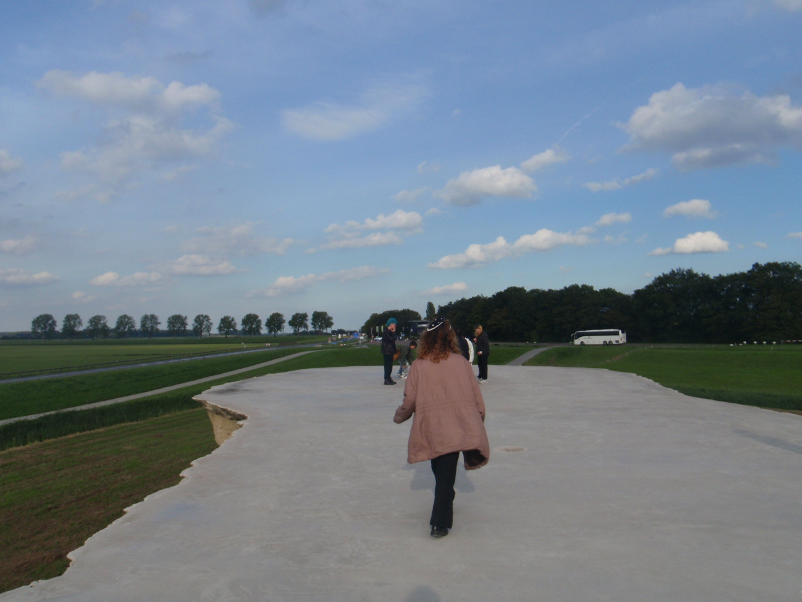Workshop
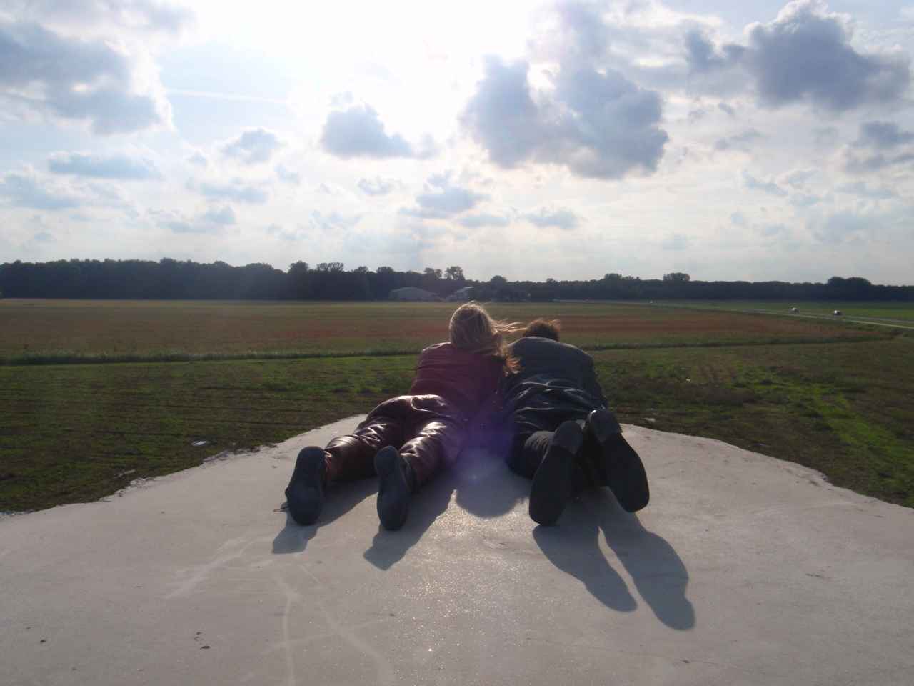Sincerity